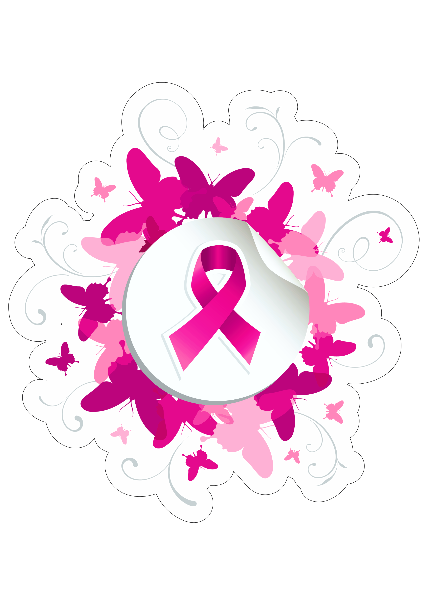

O mês de outubro traz o alerta para os cuidados com o tipo de câncer que mais mata mulheres no Brasil, o câncer de mama. Para cuidar bem de nossas crianças, não podemos esquecer da prevenção da saúde de suas principais cuidadoras – as mães..
𝕺𝖖𝖚𝖊 𝖊́ 𝖈𝖆𝖓𝖈𝖊𝖗 𝖉𝖊 𝖒𝖆𝖒𝖆
𝙴́ 𝚞𝚖 𝚝𝚞𝚖𝚘𝚛 𝚛𝚎𝚜𝚞𝚕𝚝𝚊𝚗𝚝𝚎 𝚍𝚊 𝚖𝚞𝚕𝚝𝚒𝚙𝚕𝚒𝚌𝚊𝚌̧𝚊̃𝚘 𝚍𝚎 𝚌𝚎́𝚕𝚞𝚕𝚊𝚜 𝚊𝚗𝚘𝚛𝚖𝚊𝚒𝚜 𝚍𝚊 𝚖𝚊𝚖𝚊. 𝙷𝚊́ 𝚟𝚊́𝚛𝚒𝚘𝚜 𝚝𝚒𝚙𝚘𝚜 𝚍𝚎 𝚌𝚊̂𝚗𝚌𝚎𝚛 𝚍𝚎 𝚖𝚊𝚖𝚊. 𝙰𝚕𝚐𝚞𝚗𝚜 𝚎𝚟𝚘𝚕𝚞𝚎𝚖 𝚛𝚊𝚙𝚒𝚍𝚊𝚖𝚎𝚗𝚝𝚎; 𝚘𝚞𝚝𝚛𝚘𝚜 𝚗𝚊̃𝚘. 𝙰 𝚖𝚊𝚒𝚘𝚛𝚒𝚊 𝚍𝚘𝚜 𝚌𝚊𝚜𝚘𝚜 𝚝𝚎𝚖 𝚋𝚘𝚊 𝚛𝚎𝚜𝚙𝚘𝚜𝚝𝚊 𝚊𝚘 𝚝𝚛𝚊𝚝𝚊𝚖𝚎𝚗𝚝𝚘, 𝚙𝚛𝚒𝚗𝚌𝚒𝚙𝚊𝚕𝚖𝚎𝚗𝚝𝚎 𝚚𝚞𝚊𝚗𝚍𝚘 𝚍𝚒𝚊𝚐𝚗𝚘𝚜𝚝𝚒𝚌𝚊𝚍𝚘 𝚗𝚘 𝚒𝚗𝚒́𝚌𝚒𝚘.
𝖘𝖎𝖓𝖆𝖎𝖘 𝖔𝖚 𝖘𝖎𝖓𝖙𝖔𝖒𝖆𝖘 𝖘𝖚𝖘𝖕𝖊𝖎𝖙𝖔𝖘 𝙲𝚊𝚛𝚘𝚌̧𝚘 (𝚗𝚘́𝚍𝚞𝚕𝚘) 𝚏𝚒𝚡𝚘, 𝚎𝚗𝚍𝚞𝚛𝚎𝚌𝚒𝚍𝚘 𝚎 𝚐𝚎𝚛𝚊𝚕𝚖𝚎𝚗𝚝𝚎 𝚗𝚊̃𝚘 𝚍𝚘́𝚒. 𝙴́ 𝚊 𝚙𝚛𝚒𝚗𝚌𝚒𝚙𝚊𝚕 𝚖𝚊𝚗𝚒𝚏𝚎𝚜𝚝𝚊𝚌̧𝚊̃𝚘 𝚍𝚊 𝚍𝚘𝚎𝚗𝚌̧𝚊. 𝙿𝚎𝚚𝚞𝚎𝚗𝚘𝚜 𝚗𝚘́𝚍𝚞𝚕𝚘𝚜 𝚗𝚘 𝚙𝚎𝚜𝚌𝚘𝚌̧𝚘 𝚘𝚞 𝚗𝚊 𝚛𝚎𝚐𝚒𝚊̃𝚘 𝚍𝚊𝚜 𝚊𝚡𝚒𝚕𝚊𝚜. 𝙰𝚕𝚝𝚎𝚛𝚊𝚌̧𝚘̃𝚎𝚜 𝚗𝚘 𝚋𝚒𝚌𝚘 𝚍𝚘 𝚙𝚎𝚒𝚝𝚘 (𝚖𝚊𝚖𝚒𝚕𝚘). 𝚂𝚊𝚒́𝚍𝚊 𝚎𝚜𝚙𝚘𝚗𝚝𝚊̂𝚗𝚎𝚊 𝚍𝚎 𝚕𝚒́𝚚𝚞𝚒𝚍𝚘 𝚍𝚎 𝚞𝚖 𝚍𝚘𝚜 𝚖𝚊𝚖𝚒𝚕𝚘𝚜. 𝙿𝚎𝚕𝚎 𝚍𝚊 𝚖𝚊𝚖𝚊 𝚟𝚎𝚛𝚖𝚎𝚕𝚑𝚊 𝚘𝚞 𝚙𝚊𝚛𝚎𝚌𝚒𝚍𝚊 𝚌𝚘𝚖 𝚌𝚊𝚜𝚌𝚊 𝚍𝚎 𝚕𝚊𝚛𝚊𝚗𝚓𝚊..
𝕻𝖗𝖊𝖛𝖊𝖓𝖈̧𝖆̃𝖔 𝚙𝚛𝚊𝚝𝚒𝚌𝚊𝚛 𝚊𝚝𝚒𝚟𝚒𝚍𝚊𝚍𝚎 𝚏𝚒́𝚜𝚒𝚌𝚊, 𝚖𝚊𝚗𝚝𝚎𝚛 𝚘 𝚙𝚎𝚜𝚘 𝚌𝚘𝚛𝚙𝚘𝚛𝚊𝚕 𝚊𝚍𝚎𝚚𝚞𝚊𝚍𝚘, 𝚊𝚍𝚘𝚝𝚊𝚛 𝚞𝚖𝚊 𝚊𝚕𝚒𝚖𝚎𝚗𝚝𝚊𝚌̧𝚊̃𝚘 𝚖𝚊𝚒𝚜 𝚜𝚊𝚞𝚍𝚊́𝚟𝚎𝚕 𝚎 𝚎𝚟𝚒𝚝𝚊𝚛 𝚘𝚞 𝚛𝚎𝚍𝚞𝚣𝚒𝚛 𝚘 𝚌𝚘𝚗𝚜𝚞𝚖𝚘 𝚍𝚎 𝚋𝚎𝚋𝚒𝚍𝚊𝚜 𝚊𝚕𝚌𝚘́𝚘𝚕𝚒𝚌𝚊𝚜. 𝙰𝚖𝚊𝚖𝚎𝚗𝚝𝚊𝚛 𝚎́ 𝚝𝚊𝚖𝚋𝚎́𝚖 𝚞𝚖 𝚏𝚊𝚝𝚘𝚛 𝚙𝚛𝚘𝚝𝚎𝚝𝚘𝚛..".
acesse o Link Abaixo para saber mais